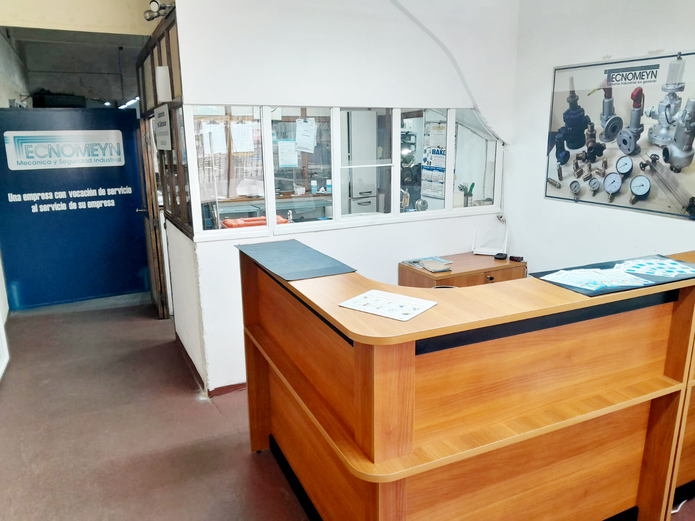

Laboratorio de Calibración
Calibración y certificación de instrumentación industrial: Presión y Temperatura con patrones certificados.
Válvulas Tecnomeyn, en su afán por la satisfacción del cliente, desarrolla una serie de soluciones y servicios integrales de mecánica y tornería industrial con más de 30 años de experiencia.
Agente vinculado a válvulas de seguridad
Mantenimiento directo en su planta
Mecánica y tornería industrial sólida
Presión, temperatura e instrumentación
Catálogo técnico completo de válvulas, instrumentación industrial, tornería y servicios en planta.
Calibración y certificación de instrumentación industrial: Presión y Temperatura con patrones certificados.
Calibración, reparación y certificación habilitada por URSEA como agente vinculado de seguridad.
Reparación integral de bombas para calderas de vapor y mantenimiento para todo tipo de fluidos industriales.
Trabajos de mecanizado, recuperación y fabricación de piezas en aceros especiales con 30 años de oficio.
Servicio técnico y reparación completa de controles hídricos para calderas y recipientes a presión.
Puesta a punto integral con intervención de ingeniero calificado y entrega del expediente para presentar ante URSEA.
Reparación, ajuste y puesta a punto de válvulas reductoras y reguladoras de vapor, gases y fluidos.
Fabricación de grifos de nivel en acero de alta presión para tubos o cajas en calderas.
Fabricación en calidad inoxidable 316 para exigencias químicas y de vapor severo.
Fabricación a medida de válvulas de vacío para tanques de barométrica e industrias afines.
Fabricación y calibración con cuerpo en T, asientos de alta precisión y certificado.
Comando para amoníaco y gases refrigerantes. Fabricación, reparación y venta de repuestos.
Entrada 3" 250# y salida 4" 150# para calderas de gran porte y líneas de vapor principal.
Reparación y venta de válvulas de seguridad nuevas en bronce naval y aceros inoxidables.
Calibración precisa, reparación y certificación con patrones trazables para generadores y líneas de proceso.
Ajuste de rangos y diferenciales, calibración y verificación de cortes de seguridad eléctrica.
Calibración y verificación térmica de sensores de temperatura industriales.
Mantenimiento y calibración de posicionadores electro-neumáticos y medidores de caudal.
Fabricación y mecanizado de boquillas para cualquier modelo y marca de quemador.
Construidos bajo normas ASTM en medidas: Ø 1/2", Ø 3/4", Ø 1" y Ø 1 1/4".
Venta de inyectores para alimentación de agua utilizados en generadores de vapor.
Ventas de grifos, tubos de vidrio pyrex y protectores de acrílico para niveles de caldera.
Reparación y mantenimiento de trampas de vapor termodinámicas, mecánicas y termostáticas.
Presión máxima hasta 60 kg/cm². Disponible para fabricación propia y alquiler de equipos.
Venta de cepillos de acero para limpieza, deshollinado y mantenimiento de tubos de caldera.
Empaquetaduras para bombas y válvulas. Fabricación de manchones y acoples con manguito.
Treinta años de solidez en tornería y seguridad mecánica en Uruguay.
TECNOMEYN se crea a partir de un profundo conocimiento de la actividad mecánica y tornería industrial que se basan en 30 años de experiencia. Como empresa de servicios apunta a brindar toda su experiencia en beneficio de su Seguridad.
Nuestro objetivo es tomar acciones que posicionen a TECNOMEYN como una empresa confiable, solvente, flexible, profesional y rápida en los trabajos a realizar. Siempre abiertos a mejorar, cada sugerencia y cada aporte recibido durante este tiempo nos han dado la posibilidad de trabajar con el esfuerzo necesario para ser mejores cada día. Más de cien empresas ya lo han comprobado.
“Nuestra marca, nuestra responsabilidad, nuestro calor humano y nuestra eficiencia, conforman junto a ustedes nuestro principal capital y esto hace que cada día renovemos, nuestro compromiso de apoyo y total respaldo para acompañarlo en el crecimiento de su Empresa.”
“Hoy no nos conformamos con ser solo un soporte de su empresa. Aspiramos a ser parte integral de cada planta industrial, suministrando nuestra vocación de servicio en el área de la reparación, calibración y certificación de las válvulas de seguridad para calderas y todo tipo de válvulas de uso industrial junto al servicio de asesoramiento técnico así como la fabricación de válvulas especiales y tornería industrial en general.”

Elija la opción que le resulte más cómoda: mensaje directo de WhatsApp o envíenos un correo desde el formulario.
Ideal si se encuentra en planta o taller y necesita una respuesta rápida del equipo técnico.
Toque el botón a continuación para abrir WhatsApp directamente con nuestro número:
Mensaje a WhatsApp (095 987 342)Complete los campos y su mensaje se redactará automáticamente para nuestro correo tecnomeyn@gmail.com.